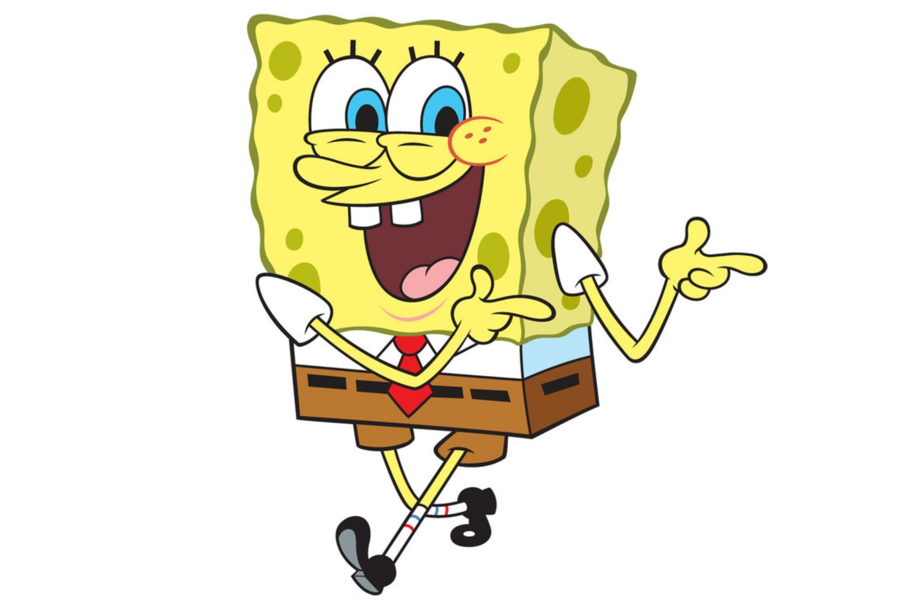

|
This article has multiple issues. Please help improve it or discuss these issues on the talk page.
(Learn how and when to remove these template messages)
|
Superhero
From Wikipedia, the free encyclopedia
For other uses, see Superhero (disambiguation).

A superhero (sometimes rendered super-hero or super hero) is a type
of heroic stock character who possesses supernatural or superhuman powers and who is dedicated to fighting crime,
protecting the public, and usually battling supervillains. A female superhero is sometimes called a superheroine
(also rendered super-heroine or super heroine), although the word superhero is commonly used for females also. Superhero
fiction is the genre of fiction that is centered on such characters, especially in American comic books since the
1930s.
By most definitions, characters do not require actual superhuman powers or phenomena to be deemed superheroes.[1][2][3]
While the Dictionary.com definition of "superhero" is "a figure, especially in a comic strip or cartoon, endowed
with superhuman powers and usually portrayed as fighting evil or crime",[4] the longstanding Merriam-Webster dictionary
gives the definition as "a fictional hero having extraordinary or superhuman powers; also: an exceptionally skillful
or successful person".[5] Terms such as masked crime fighters, costumed adventurers or masked vigilantes are sometimes
used to refer to characters such as the Spirit, who may not be explicitly referred to as superheroes but nevertheless
share similar traits.
Some superheroes use their powers to counter daily crime while also combating threats against humanity from supervillains4,
who are their criminal counterparts. Often at least one of these supervillains will be the superhero's archenemy.
Some long-running superheroes such as Batman, Spider-Man, Superman, Captain America, Wonder Woman, Iron Man, the
Flash, Wolverine, Green Lantern, and Hulk have a rogues gallery of many villains.
Contents
- History
- Early History
- 1940s
- Common traits
- Common costume features
- Bases/headquarters
History
Main articles: Superhero fiction § History, History of comics, and Superhero film
Early History
The word 'superhero' dates to at least 1917.[6] Antecedents of the archetype include such folkloric heroes as Robin Hood,
who adventured in distinctive clothing.[7] The 1903 play The Scarlet Pimpernel and its spinoffs popularized the idea
of a masked avenger and the superhero trope of a secret identity.[7] Shortly afterward, masked and costumed pulp
fiction characters such as Zorro (1919), The Shadow (1930) and comic strip heroes, such as the Phantom (1936) began
appearing, as did non-costumed characters with super strength, including Patoruzú (1928), the comic-strip character
Popeye (1929) and novelist Philip Wylie's protagonist Hugo Danner (1930).[8]
In the 1930s, both trends came together in some of the earliest superpowered costumed heroes such as Japan's Ōgon Bat[9][10]
(visualized in painted panels used by kamishibai oral storytellers in Japan since 1931), Mandrake the Magician[11][12][13]
(1934), Superman in 1938 and Captain Marvel (1939) at the beginning of the Golden Age of Comic Books.
1940s
During the 1940s there were many superheroes: The Flash, Green Lantern and Blue Beetle debuted in this era. This era
saw the debut of first known female superhero, writer-artist Fletcher Hanks's character Fantomah, an ageless ancient
Egyptian woman in the modern day who could transform into a skull-faced creature with superpowers to fight evil;
she debuted in Fiction House's Jungle Comics #2 (Feb. 1940), credited to the pseudonymous "Barclay Flagg".[14][15]
The Invisible Scarlet O'Neil, a non-costumed character who fought crime and wartime saboteurs using the superpower
of invisibility created by Russell Stamm, would debut in the eponymous syndicated newspaper comic strip a few months
later on June 3, 1940.[16]
One superpowered character was portrayed as an antiheroine, a rarity for its time: the Black Widow, a costumed emissary
of Satan who killed evildoers in order to send them to Hell — debuted in Mystic Comics #4 (Aug. 1940), from Timely
Comics, the 1940s predecessor of Marvel Comics. Most of the other female costumed crime-fighters during this era
lacked superpowers. Notable characters include The Woman in Red,[17][18] introduced in Standard Comics' Thrilling
Comics #2 (March 1940); Lady Luck, debuting in the Sunday-newspaper comic-book insert The Spirit Section June 2,
1940; the comedic character Red Tornado, debuting in All-American Comics #20 (Nov 1940); Miss Fury,[19] debuting
in the eponymous comic strip by female cartoonist Tarpé Mills on April 6, 1941; the Phantom Lady, introduced in Quality
Comics Police Comics #1 (Aug. 1941); the Black Cat,[20][21] introduced in Harvey Comics' Pocket Comics #1 (also Aug.
1941); and the Black Canary, introduced in Flash Comics #86 (Aug. 1947) as a supporting character.[22] The most iconic
comic book superheroine, who debuted during the Golden Age, is Wonder Woman.[23] Modeled from the myth of the Amazons
of Greek mythology, she was created by psychologist William Moulton Marston, with help and inspiration from his wife
Elizabeth and their mutual lover Olive Byrne.[24][25] Wonder Woman's first appearance was in All Star Comics #8 (Dec.
1941), published by All-American Publications, one of two companies that would merge to form DC Comics in 1944.
Common Traits
Many superhero characters display the following traits:
- Extraordinary powers or abilities. Superhero powers vary widely; superhuman strength, the ability to fly, enhanced
senses, and the projection of energy bolts are all common. Some characters like Batman, Mockingbird, the Phantom
and the Question possess no superhuman powers but have mastered skills such as martial arts, espionage techniques,
and applied or forensic sciences to a highly remarkable degree. Others rely on fantastical weapons or technology,
such as Iron Man's powered armor suits, Green Lantern’s power ring, and trick arrows employed by Green Arrow
and Hawkeye. Many characters supplement their innate superhuman powers with a special weapon or device (e.g.
Captain America's shield, Wonder Woman's lasso and bracelets, Thor's weather manipulating hammer, and Wolverine's
adamantium claws).
- A strong moral code, including a willingness to risk one's own safety in the service of good without expectation
of reward. Such a code often includes a refusal or strong reluctance to kill or wield lethal weapons.
- A motivation, such as a sense of responsibility and guilt (e.g. Spider-Man), an altruistic calling (e.g. Wonder Woman),
a childhood trauma or personal vendetta against criminals (e.g. Batman), or a strong belief in justice and humanitarian
service (e.g. Superman).